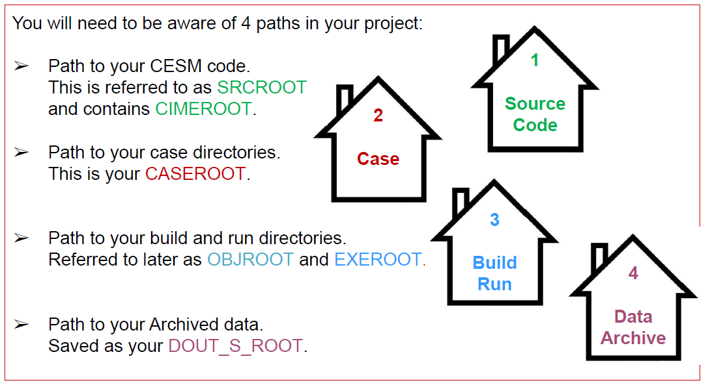

CESM2 Workspaces
Contents
CESM2 Workspaces#
Setting up Your CESM Workspace requires knowledge of the locations of different parts of the model and your experiment
Paths are the directions to the location of different pieces of your experiment
Roots are saved paths that point to each piece
Workspace Overview#

Figure: Overview of the CESM2 Workspace Paths